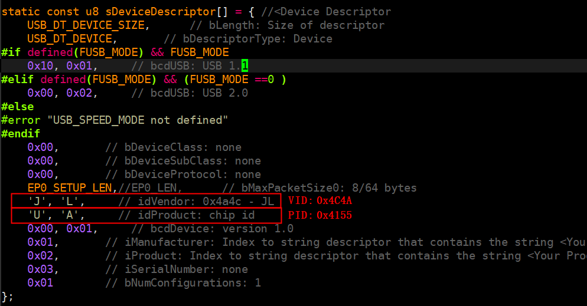
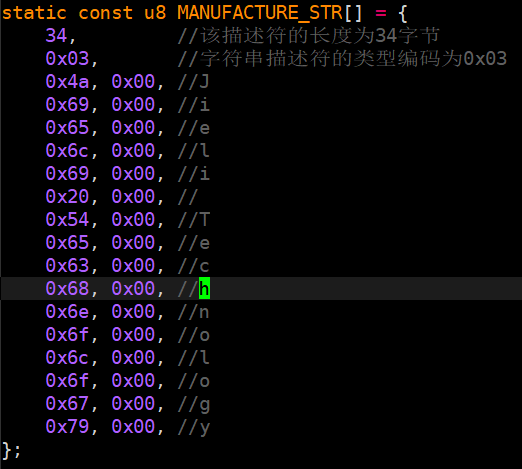
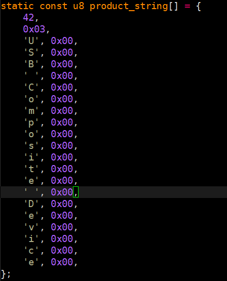
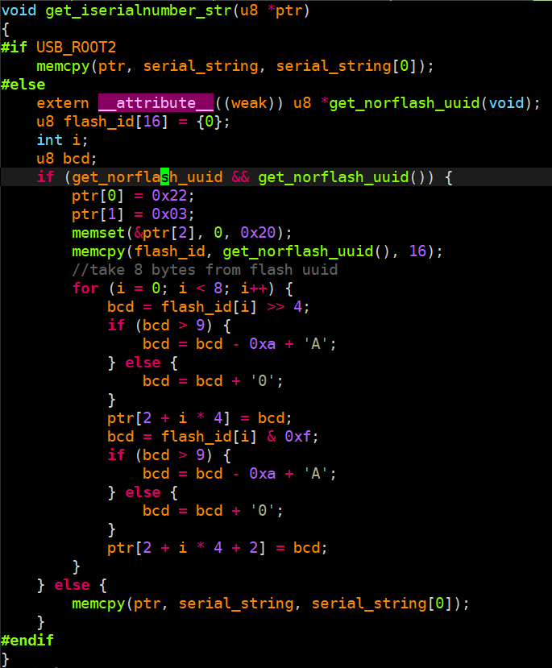
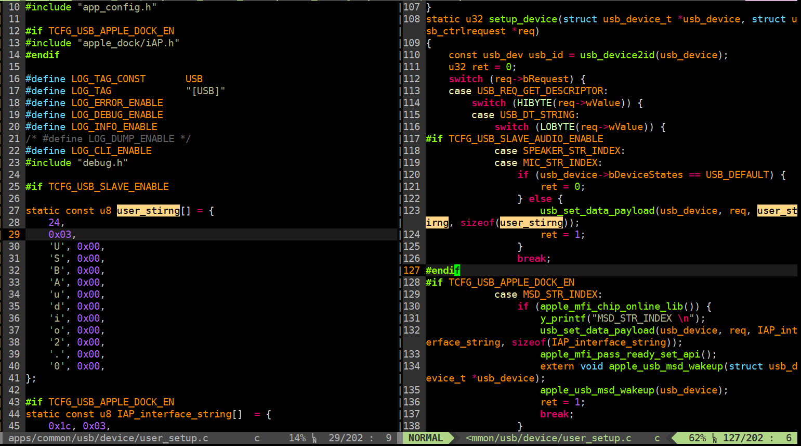
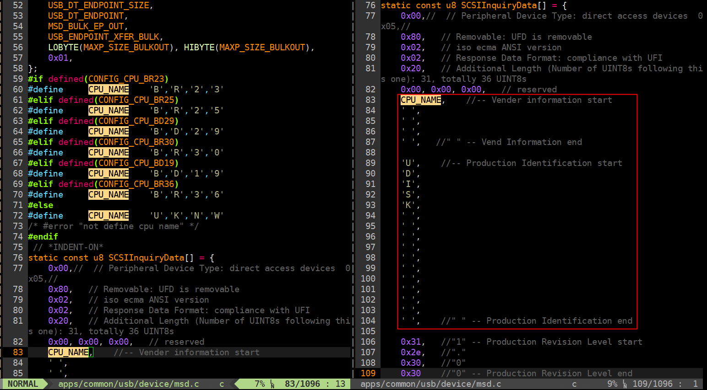
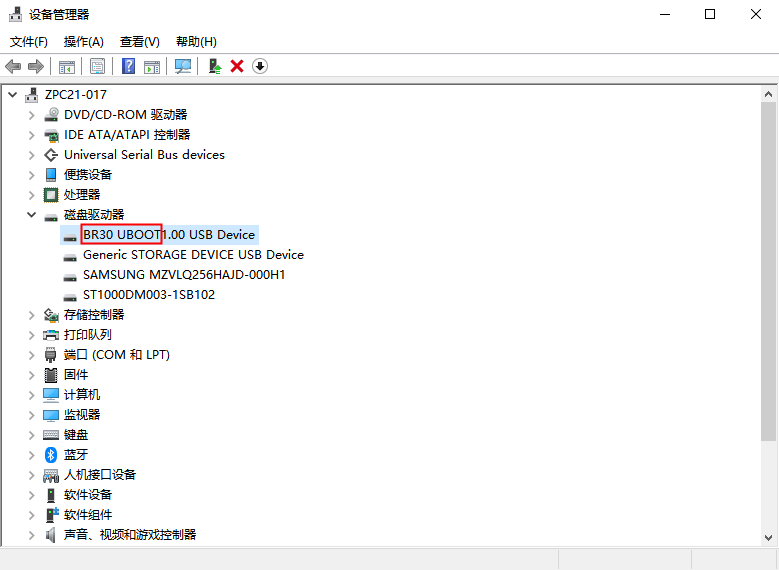

3.6. USB
USB驱动程序支持配置成High-Speed和Full-Speed两种工作模式（High-Speed需要芯片支持），方便用户应用在不同的场景中。USB接口支持OTG，可以实现主从机热插拔检测。协议栈支持主机驱动和从机驱动，拥有丰富的设备类协议，其中：
- 从机模式支持的协议：
Mass Storage Class (MSC)
Usb Audio CLass (UAC)
Human Interface Device Class (HID)
Communications Device Class (CDC)
Apple MFI
- 主机模式支持的协议：
Mass Storage Class (MSC)
Usb Audio Class (UAC)
Human Interface Device Class (HID)
ADB & AOA
驱动程序支持丰富的配置项，默认配置项在文件usb_std_class_def.h和usb_common_def.h内，用户可以#include配置文件后，通过重定义宏来实现客制化需求。
芯片USB端点DMA寻址支持情况
Full-Speed |
High-Speed |
|||
|---|---|---|---|---|
TX |
RX |
TX |
RX |
|
EP0 |
64 |
64 |
1024 |
1024 |
EP1 |
1024 |
1024 |
1024 |
1024 |
EP2 |
1024 |
1024 |
1024 |
1024 |
EP3 |
1024 |
1024 |
4096 |
4096 |
EP4 |
1024 |
1024 |
4096 |
4096 |
EP5 |
N/A |
N/A |
64 |
64 |
EP6 |
N/A |
N/A |
64 |
64 |
芯片usb传输速率支持
Chip |
Speed |
bps |
|---|---|---|
|
Full-Speed |
12Mbps |
|
High-Speed |
480Mbps |
3.6.1. 公共API
int usb_memory_init(void)
初始化端点dma buffer内存池，需要在启动host或者device前调用
- 参数:
无
- 返回值:
固定为0
- 备注:
无
int usb_otg_init(const struct dev_node * node, void *arg)
OTG插拔检测初始化
- 参数:
*node – 填NULL即可
*arg – 需要填 struct otg_dev_data 类型结构体
- 返回值:
固定为0
- 备注:
无
Note
usb_otg_init()的参数列表比较奇怪，是因为这个函数以前是赋值给struct device_operations的成员int (*init)(const struct dev_node *node, void *)的，目前为了历史兼容保留了函数接口形式。
u32 usb_otg_online(const usb_dev usb_id)
获取otg当前状态
- 参数:
usb_id – usb设备号，首个usb设备号是0
- 返回值:
otg状态，参考 IDLE_MODE
- 备注:
无
void usb_message_to_stack(int msg, void *arg, u8 sync)
发送消息给usb_task
- 参数:
msg – 需要发送的消息，参考 USBSTACK_OTG_MSG
*arg – 消息的参数列表
sync – 是否等待执行完毕
0 不等待
1 等待
- 返回值:
无
- 备注:
sync用于等待usb_task执行完消息，例如接下来的代码需要usb打开后才可以执行，则在msg填USBSTACK_START时将sync填1
3.6.2. USB从机API
3.6.2.1. 应用层调用的API
void usb_start(const usb_dev usbfd)
打开usb device
- 参数:
usbfd – usb设备号，首个usb设备号是0
- 返回值:
无
- 备注:
无
void usb_pause(const usb_dev usbfd)
挂起usb device，用于需要暂停usb功能的场景，例如从PC模式切换到其他模式
- 参数:
usbfd – usb设备号，首个usb设备号是0
- 返回值:
无
- 备注:
无
void usb_stop(const usb_dev usbfd)
关闭usb device，用于usb离线时关闭usb的场合
- 参数:
usbfd – usb设备号，首个usb设备号是0
- 返回值:
无
- 备注:
无
int pc_device_event_handler(int *msg)
处理otg从机消息
- 参数:
*msg – otg消息
- 返回值:
是否要切模式
0 不切模式
1 切入PC模式
2 切出PC模式
- 备注:
无
3.6.2.2. 内层功能逻辑API
int usb_device_mode(const usb_dev usb_id, const u32 class)
设备类的注册和usb硬件init
设备类的注销和usb硬件uninit
- 参数:
usb_id – usb设备号，首个usb设备号是0
class – 设备类
可以是多个设备类宏的组合，参考 class_definitions
填0表示注销设备类，uninit usb
- 返回值:
固定为0
- 备注:
无
void usb_add_desc_config(const usb_dev usb_id, u32 index, const desc_config desc)
添加1个设备类描述符的回调函数，描述符应包括完整的interface desc + class desc + endpoint desc，回调函数应自己实现修改interface号
- 参数:
usb_id – usb设备号，首个usb设备号是0
index – 序号，从0开始，每调一次该函数index应该加1
desc – desc_config 类型的函数指针
- 返回值:
无
- 备注:
无
u32 usb_set_interface_hander(const usb_dev usb_id, u32 itf_num, itf_hander hander)
设置类特定请求回调函数
- 参数:
usb_id – usb设备号，首个usb设备号是0
itf_num – 接口号
hander – itf_hander 类型的函数指针
- 返回值:
接口号
- 备注:
无
void usb_set_setup_recv(struct usb_device_t *usb_device, void *recv)
设置类特定请求out stage回调函数
- 参数:
*usb_device – usb设备句柄
*recv – setup_recv 类型的函数指针
- 返回值:
接口号
- 备注:
无
u32 usb_set_reset_hander(const usb_dev usb_id, u32 itf_num, itf_reset_hander hander)
设置设备类收到usb reset时的回调函数，回调函数需要实现端点初始化
- 参数:
usb_id – usb设备号，首个usb设备号是0
itf_num – 接口号
hander – itf_reset_hander 类型的函数指针
- 返回值:
接口号
- 备注:
无
void usb_set_setup_phase(struct usb_device_t *usb_device, u8 setup_phase)
设置ep0控制传输的阶段
- 参数:
*usb_device – usb设备句柄
setup_phase – 阶段，参考 setup_stage
- 返回值:
无
- 备注:
无
u8 *usb_set_data_payload(struct usb_device_t *usb_device, struct usb_ctrlrequest *req, const void *data, u32 len)
准备ep0 控制传输in stage的数据
- 参数:
*usb_device – usb设备句柄
*req – usb请求，参考 struct usb_ctrlrequest
*data – in stage要发送的数据
len – 数据长度
- 返回值:
发送buffer的地址
- 备注:
如果填进data的数据是const类型，则可以使用返回值进一步修改需要发送的数据
u32 usb_g_set_intr_hander(const usb_dev usb_id, u32 ep, usb_interrupt hander)
设置端点中断处理函数
- 参数:
usb_id – usb设备号，首个usb设备号是0
ep – 端点号
hander – usb_interrupt 类型回调函数
- 返回值:
固定为0
- 备注:
IN端点需要 ep | USB_DIR_IN
u32 usb_g_ep_config(const usb_dev id, u32 ep, u32 type, u32 ie, u8 *ptr, u32 dma_size)
usb从机端点初始化配置
- 参数:
id – usb设备号，首个usb设备号是0
ep – 端点号
type – 传输类型，参考 ep_trans_type
ie – 中断使能
ptr – 端点dma buffer起始地址
dma_size – 端点最大包长
- 返回值:
固定为0
- 备注:
IN端点需要 ep | USB_DIR_IN
//下列接口功能相同，都是usb_g_ep_read()的封装
u32 usb_g_ep_read(const usb_dev usb_id, u32 ep, u8 *ptr, u32 len, u32 block)
u32 usb_g_bulk_read(const usb_dev usb_id, u32 ep, u8 *ptr, u32 len, u32 block)
u32 usb_g_intr_read(const usb_dev usb_id, u32 ep, u8 *ptr, u32 len, u32 block)
u32 usb_g_iso_read(const usb_dev usb_id, u32 ep, u8 *ptr, u32 len, u32 block)
usb从机端点接收接口
- 参数:
usb_id – usb设备号，首个usb设备号是0
ep – 端点号
ptr – 读出接收数据的缓存
len – 期望接收的长度
block – 当usb未收到数据时，是否阻塞
- 返回值:
读出数据的长度，0表示传输失败
- 备注:
无
//下列接口功能相同，都是usb_g_ep_write()的封装
u32 usb_g_ep_write(const usb_dev usb_id, u32 ep, const u8 *ptr, u32 len)
u32 usb_g_bulk_write(const usb_dev usb_id, u32 ep, const u8 *ptr, u32 len)
u32 usb_g_intr_write(const usb_dev usb_id, u32 ep, const u8 *ptr, u32 len)
u32 usb_g_iso_write(const usb_dev usb_id, u32 ep, const u8 *ptr, u32 len)
usb从机端点发送接口
- 参数:
usb_id – usb设备号，首个usb设备号是0
ep – 端点号
ptr – 发送数据的缓存
len – 期望发送的长度
- 返回值:
发送数据的长度，0表示传输失败
- 备注:
无
void *usb_alloc_ep_dmabuffer(const usb_dev usb_id, u32 ep, u32 dma_size)
usb从机分配端点dma buffer
- 参数:
usb_id – usb设备号，首个usb设备号是0
ep – 端点号
dma_size – 需要的DMA内存大小
- 返回值:
分配出来的buffer首地址，NULL表示分配失败
- 备注:
IN端点需要 ep | USB_DIR_IN
bulk传输的接收方向需要double-buffer，所以dma_size要填2倍大小
void usb_free_ep_dmabuffer(const usb_dev usb_id, void *buf)
usb从机释放端点dma buffer
- 参数:
usb_id – usb设备号，首个usb设备号是0
*buf – 需要释放的buffer首地址
- 返回值:
无
- 备注:
无
3.6.3. USB主机API
3.6.3.1. 应用层调用的API
u32 usb_host_mount(const usb_dev id, u32 retry, u32 reset_delay, u32 mount_timeout)
usb主机挂载设备，实现的事务有usb chirp握手，获取描述符，解析设备类，推送设备上线消息
- 参数:
id – usb设备号，首个usb设备号是0
retry – 枚举失败重试枚举次数
reset_delay – 发送usb reset的时间
mount_timeout – 等待握手超时时间
- 返回值:
0表示成功，非0表示错误号
- 备注:
无
u32 usb_host_unmount(const usb_dev id)
usb主机卸载设备，推送离线消息
- 参数:
id – usb设备号，首个usb设备号是0
- 返回值:
0表示成功，非0表示错误号
- 备注:
无
u32 usb_host_remount(const usb_dev id, u32 retry, u32 delay, u32 ot, u8 notify)
usb主机重新挂载设备，这个函数实现了先卸载再挂载的
- 参数:
id – usb设备号，首个usb设备号是0
retry – 枚举失败重试枚举次数
delay – 发送usb reset的时间
ot – 等待握手超时时间
notify – 是否推送remount消息
- 返回值:
0表示成功，非0表示错误号
- 备注:
无
const struct device_operations mass_storage_ops = {
.init = NULL,
.online = usb_stor_online,
.open = usb_stor_open,
.read = usb_stor_read,
.write = usb_stor_write,
.ioctl = usb_stor_ioctrl,
.close = usb_stor_close,
};
mass storage 访问U盘的IO接口，一般不会直接调用，而是挂载到device接口使用，下面是使用的例子：
extern const struct device_operations mass_storage_ops;
//设备注册表，sdk中都会有，只需要把需要挂载的设备填进表中
REGISTER_DEVICES(device_table) = {
//...（其他设备注册）
#if TCFG_UDISK_ENABLE
{ "udisk0", &mass_storage_ops, NULL},
#endif
//...
};
u8 buf[512];
int NumOfBlocks;
u32 block_size, total_blocks;
struct device *dev = dev_open("udisk0", NULL); //打开设备，打开成功返回句柄，失败返回NULL
if (dev) {
dev_ioctl(dev, IOCTL_GET_BLOCK_SIZE, (unsigned int)&block_size); //获取块大小
dev_ioctl(dev, IOCTL_GET_BLOCK_NUMBER, (unsigned int)&total_blocks); //获取总块数
NumOfBlocks = dev_bulk_read(dev, buf, 2, 1); //从块地址2读取1块数据（512字节），成功则返回读出多少块，失败返回 < 0 的错误码
NumOfBlocks = dev_bulk_write(dev, buf, 2, 1); //向块地址2写入1块数据（512字节），成功则返回写入多少块，失败返回 < 0 的错误码
dev_close(dev); //关闭设备
}
3.6.3.2. 内层功能逻辑API
int usb_host_force_reset(const usb_dev usb_id)
usb主机强制复位设备
- 参数:
id – usb设备号，首个usb设备号是0
- 返回值:
0表示成功，非0表示错误号
- 备注:
无
int usb_control_msg(struct usb_host_device *host_dev, u8 request, u8 requesttype, u16 value, u16 index, void *data, u16 size)
usb主机控制传输
- 参数:
*host_dev – usb主机句柄
request – 控制传输bRequest字段
requesttype – 控制传输bmRequestType字段
value – 控制传输wValue字段
index – 控制传输wIndex字段
*data – 控制传输数据阶段的数据
size – 控制传输wLength字段
- 返回值:
0表示成功，非0表示错误号
- 备注:
无
s32 usb_bulk_only_send(struct device *device, u8 host_ep, u16 txmaxp, u8 target_ep, const u8 *pBuf, u32 len)
usb主机bulk传输发送数据
- 参数:
*device – 设备句柄
host_ep – 主机端点号
txmaxp – TX最大包长
target_ep – 设备端点号，指从设备描述符中获取的端点号
*pBuf – 发送数据buffer
len – 发送数据长度
- 返回值:
>= 0表示成功发送的数据长度，< 0表示错误号
- 备注:
无
s32 usb_bulk_only_receive(struct device *device, u8 host_ep, u16 rxmaxp, u8 target_ep, u8 *pBuf, u32 len)
usb主机bulk传输接收数据
- 参数:
*device – 设备句柄
host_ep – 主机端点号
rxmaxp – RX最大包长
target_ep – 设备端点号，指从设备描述符中获取的端点号
*pBuf – 接收数据buffer
len – 接收数据长度
- 返回值:
>= 0表示成功接收的数据长度，< 0表示错误号
- 备注:
无
u32 usb_get_ep_num(const usb_dev id, u32 ep_dir, u32 type)
usb主机获取空闲端点，即分配未被指派的端点
- 参数:
id – usb设备号，首个usb设备号是0
ep_dir – 端点方向，USB_DIR_IN or USB_DIR_OUT
type – 传输类型，参考 ep_trans_type
- 返回值:
分配到的端点号
- 备注:
无
void *usb_h_alloc_ep_buffer(const usb_dev usb_id, u32 ep, u32 dma_size)
usb主机分配端点dma buffer
- 参数:
usb_id – usb设备号，首个usb设备号是0
ep – 端点号
dma_size – 需要的DMA内存大小
- 返回值:
分配到的dma buffer首地址，失败返回NULL
- 备注:
IN端点需要 ep | USB_DIR_IN
bulk传输的接收方向需要double-buffer，所以dma_size要填2倍大小
void usb_h_free_ep_buffer(const usb_dev usb_id, void *buf)
usb主机释放端点dma buffer
- 参数:
usb_id – usb设备号，首个usb设备号是0
*buf – dma buffer首地址
- 返回值:
无
- 备注:
无
u32 usb_h_ep_config(const usb_dev id, u32 ep, u32 type, u32 ie, u32 interval, u8 *ptr, u32 dma_size)
usb主机端点初始化配置
- 参数:
id – usb设备号，首个usb设备号是0
ep – 端点号
type – 传输类型，参考 ep_trans_type
ie – 中断使能
interval – 对于intr传输及iso传输是指传输间隔，对于bulk传输是指收到多少次NAK就中止传输
ptr – dma buffer的首地址
dma_size – 需要的DMA内存大小
- 返回值:
固定为0
- 备注:
IN端点需要 ep | USB_DIR_IN
void usb_h_set_ep_isr(struct usb_host_device *host_dev, u32 ep, usb_h_interrupt hander, void *p)
usb主机设置端点中断回调函数
- 参数:
host_dev – usb主机句柄
ep – 端点号
hander – usb_h_interrupt 类型的函数指针
*p – 函数指针hander的private data
- 返回值:
无
- 备注:
IN端点需要 ep | USB_DIR_IN
void usb_set_intr_txe(const usb_dev id, u32 ep)
usb主机使能端点tx中断
- 参数:
id – usb设备号，首个usb设备号是0
ep – 端点号的bitmap，例如BIT(1) | BIT(2)表示使能端点1，2的中断
- 返回值:
无
- 备注:
无
void usb_clr_intr_txe(const usb_dev id, u32 ep)
usb主机禁用端点tx中断
- 参数:
id – usb设备号，首个usb设备号是0
ep – 端点号的bitmap，例如BIT(1) | BIT(2)表示禁用端点1，2的中断，填(u32)-1表示禁用所有端点中断
- 返回值:
无
- 备注:
无
void usb_set_intr_rxe(const usb_dev id, u32 ep)
usb主机使能端点rx中断
- 参数:
id – usb设备号，首个usb设备号是0
ep – 端点号的bitmap，例如BIT(1) | BIT(2)表示使能端点1，2的中断
- 返回值:
无
- 备注:
无
void usb_clr_intr_rxe(const usb_dev id, u32 ep)
usb主机禁用端点rx中断
- 参数:
id – usb设备号，首个usb设备号是0
ep – 端点号的bitmap，例如BIT(1) | BIT(2)表示禁用端点1，2的中断，填(u32)-1表示禁用所有端点中断
- 返回值:
无
- 备注:
无
int usb_h_ep_write_async(const usb_dev id, u8 host_ep, u16 txmaxp, u8 target_ep, const u8 *ptr, u32 len, u32 xfer, u32 kstart)
usb主机端点异步发送接口，一般用在中断的场景
- 参数:
id – usb设备号，首个usb设备号是0
host_ep – 主机端点号
txmaxp – 最大包长
target_ep – 设备端点号，指从设备描述符中获取的端点号
ptr – 发送数据的缓存
len – 发送长度
xfer – 传输类型，参考 ep_trans_type
kstart – 启动DMA发送
- 返回值:
返回发送长度，< 0表示错误号
- 备注:
无
u32 usb_h_ep_write(const usb_dev id, u8 host_ep, u16 txmaxp, u8 target_ep, const u8 *ptr, u32 len, u32 xfer)
usb主机端点同步发送接口，用在线程中
- 参数:
id – usb设备号，首个usb设备号是0
host_ep – 主机端点号
txmaxp – 最大包长
target_ep – 设备端点号，指从设备描述符中获取的端点号
ptr – 发送数据的缓存
len – 发送长度
xfer – 传输类型，参考 ep_trans_type
- 返回值:
返回发送长度，< 0表示错误号
- 备注:
无
int usb_h_ep_read_async(const usb_dev id, u8 host_ep, u8 target_ep, u8 *ptr, u32 len, u32 xfer, u32 kstart)
usb主机端点异步接收接口，一般用在中断的场景
- 参数:
id – usb设备号，首个usb设备号是0
host_ep – 主机端点号
target_ep – 设备端点号，指从设备描述符中获取的端点号
ptr – 接收数据的缓存
len – 接收长度
xfer – 传输类型，参考 ep_trans_type
kstart – 启动DMA接收，接收完成在中断调用这个函数，kstart填0，就能读到接收的数据
- 返回值:
返回接收长度，< 0表示错误号
- 备注:
无
u32 usb_h_ep_read(const usb_dev id, u8 host_ep, u16 rxmaxp, u8 target_ep, u8 *ptr, u32 len, u32 xfer)
usb主机端点同步接收接口，用在线程中
- 参数:
id – usb设备号，首个usb设备号是0
host_ep – 主机端点号
rxmaxp – 最大包长
target_ep – 设备端点号，指从设备描述符中获取的端点号
ptr – 接收数据的缓存
len – 接收长度
xfer – 传输类型，参考 ep_trans_type
- 返回值:
返回接收长度，< 0表示错误号
- 备注:
无
3.6.4. 配置项
- 默认配置表：
apps/common/device/usb/usb_std_class_def.h
apps/common/device/usb/usb_common_def.h
用户可以在#include “*.h”默认配置表的基础上，对部分配置项进行重定义，这样就可以在不同的产品形态中使能不同的特性以及功能。以下是一些用户常用配置项目：
//usb从机模式使能
#define TCFG_PC_ENABLE 0
//USB主机总开关
#define TCFG_USB_HOST_ENABLE 1
//usb主机模式U盘功能使能
#define TCFG_UDISK_ENABLE DISABLE_THIS_MOUDLE
//OTG设备使能，bitmap，USB0 = BIT(0) USB1 = BIT(1)
#define TCFG_OTG_USB_DEV_EN BIT(0)
//VPWR(LDOIN)是否接到USB口
#define TCFG_USB_PORT_CHARGE 0
//USB CDC后台功能使能
#define TCFG_USB_CDC_BACKGROUND_RUN 0
//usb从机模式动态内存分配使能
#define USB_MALLOC_ENABLE 0
//usb主机模式动态内存分配使能
#define USB_H_MALLOC_ENABLE 1
#if TCFG_USB_HOST_ENABLE
//usb主机枚举失败重试枚举次数
#define MOUNT_RETRY 3
//usb主机发送usb reset的时间
#define MOUNT_RESET 40
//usb主机等待握手超时时间
#define MOUNT_TIMEOUT 50
#define TCFG_USB_HOST_ENABLE 1
#else
#define TCFG_USB_HOST_ENABLE 0
#endif
//usb otg从机上线检测计数
#define TCFG_OTG_SLAVE_ONLINE_CNT 3
//usb otg从机离线检测计数
#define TCFG_OTG_SLAVE_OFFLINE_CNT 2
//usb otg主机上线检测计数
#define TCFG_OTG_HOST_ONLINE_CNT 2
//usb otg主机离线检测计数
#define TCFG_OTG_HOST_OFFLINE_CNT 3
//usb otg检测时间间隔
#define TCFG_OTG_DET_INTERVAL 50
VID & PID
Manufacturer String
Product String
Serial Number String
Audio的名称（扬声器、麦克风）
设备管理器 - 磁盘驱动器 名称
 文件管理器 - 可移动磁盘 修改卷标

3.6.5. 类型引用
3.6.5.1. Structures
struct otg_dev_data {
u8 usb_dev_en; ///<有哪几个otg设备使能，如USB0，USB1。
u8 slave_online_cnt; ///<从机上线阈值
u8 slave_offline_cnt; ///<从机下线阈值
u8 host_online_cnt; ///<主机上线阈值
u8 host_offline_cnt; ///<主机下线阈值
u8 detect_mode; ///<otg可用模式配置
u8 detect_time_interval; ///<检测时间间隔，单位 ms
void *otg1; //需要使用双USB口独立配置时，在板级.c文件用户自定义一个otg信息的结构体，并指向它。
};
struct usb_ctrlrequest {
u8 bRequestType;
u8 bRequest;
u16 wValue;
u16 wIndex;
u16 wLength;
} __attribute__((packed));
3.6.5.2. Enumerations
enum {
USBSTACK_OTG_MSG = 0x80,
USBSTACK_START,
USBSTACK_PAUSE,
USBSTACK_STOP,
USBSTACK_MSD_RUN,
USBSTACK_CDC_BACKGROUND,
USBSTACK_HOST_MOUNT,
USBSTACK_HOST_UNMOUNT,
USBSTACK_HOST_REMOUNT,
USBSTACK_HOST_MOUNT_AFTER,
USBSTACK_HOST_UNMOUNT_AFTER,
};
enum {
IDLE_MODE = 0, ///<空闲模式
DISCONN_MODE = 1, ///<断连模式
HOST_MODE = 2, ///<主机模式
PRE_SLAVE_MODE, ///<成为从机模式前的一个中间模式
SLAVE_MODE_WAIT_CONFIRMATION, ///<从机模式还需等待再次确认
SLAVE_MODE, ///<从机模式
CHARGE_MODE, ///<充电模式
OTG_USER_MODE, ///<用户模式，暂时未具体定义
};
3.6.5.3. Macros
#define MASSSTORAGE_CLASS 0x00000001
#define SPEAKER_CLASS 0x00000002
#define MIC_CLASS 0x00000004
#define HID_CLASS 0x00000008
#define CDC_CLASS 0x00000010
#define CUSTOM_HID_CLASS 0x00000020
#define AUDIO_CLASS (SPEAKER_CLASS|MIC_CLASS)
///USB Slave 控制传输各阶段
#define USB_EP0_STAGE_SETUP 0
#define USB_EP0_STAGE_IN 1
#define USB_EP0_STAGE_OUT 2
#define USB_EP0_SET_STALL 3
#define USB_EP0_IGNORE 4
#define USB_EP0_STAGE_NAK 5
#define USB_ENDPOINT_XFERTYPE_MASK 0x03 /* in bmAttributes */
#define USB_ENDPOINT_XFER_CONTROL 0
#define USB_ENDPOINT_XFER_ISOC 1
#define USB_ENDPOINT_XFER_BULK 2
#define USB_ENDPOINT_XFER_INT 3
#define USB_ENDPOINT_MAX_ADJUSTABLE 0x80
#define USB_DIR_OUT 0 /* to device */
#define USB_DIR_IN 0x80 /* to host */
3.6.5.4. Type Definitions
typedef u32(*desc_config)(const usb_dev usb_id, u8 *ptr, u32 *cur_itf_num);
typedef u32(*itf_hander)(struct usb_device_t *usb_device, struct usb_ctrlrequest *);
u32(*setup_recv)(struct usb_device_t *, struct usb_ctrlrequest *);
typedef void(*itf_reset_hander)(struct usb_device_t *, u32 itf);
typedef void(*usb_interrupt)(struct usb_device_t *, u32 ep);
typedef void(*usb_h_interrupt)(struct usb_host_device *, u32 ep);